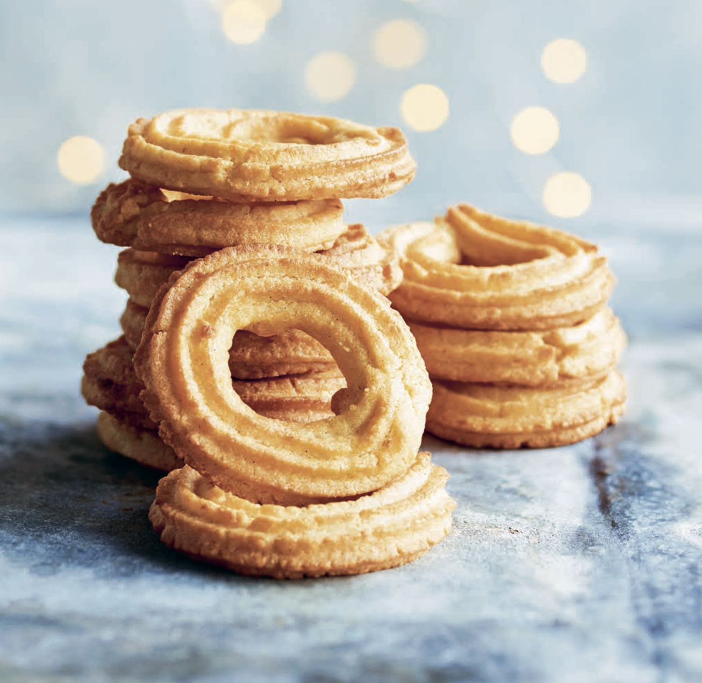

Go Back
Recipe: Danish Vanilla rings – vaniliekranse

Posted by Scandikitchen Blomhoj
VANILLA & ORANGE BUTTER COOKIES (vaniljekranse med appelsin)
No Danish Christmas is complete without these ringed butter cookies, famous all over the world. These ones have added orange zest for variation, but if you want to stay traditional, just leave it out. Or if you want to be bold, you can even flavour these further with saffron (although this is definitely not traditional in Denmark, but would be popular with Swedes who add saffron to all things sweet during the festive season). The cookies may spread in the oven, and it is quite hard to get them to keep their pattern, so I usually chill them before baking.
Ingredients
- 170 g - 7/8 cup - granulated sugar
- 200 g - 3/4 cup - butter at room temperature
- 275 g - 2 cups - strong bread flour
- 100 g - 1 cup - ground almonds
- 1 teaspoon baking powder
- 1 egg
- a pinch of salt
- seeds from 1 whole vanilla pod/bean
- 1 teaspoon freshly grated orange zest optional
Instructions
- Mix the sugar and butter (only briefly until just combined), then add the remaining ingredients and mix until you have an even dough (you can do this in a food processor or by hand). Do not overmix. Your dough needs to be soft enough to push through a piping/pastry bag nozzle. It is a hard dough – in Denmark, most people use a metal case to push the dough through the nozzle. A fabric piping/pastry bag is also good, but your dough needs to be quite warm to do this so I suggest you refrigerate the piped rings as soon as you are done as to keep their shape. If you find this difficult but have a good-sized nozzle, you can simply push the dough through the nozzle with your thumb.
- Line several baking sheets with baking parchment. Pipe out the dough 8–10 cm/3 1/4–4 in. long, then carefully connect into circles and place on the lined baking sheets. Make sure the rolls are no thicker than your little finger, because they will spread a bit during baking. Place the baking sheets in the fridge if you have space so they can firm up as much as possible before baking.
- Preheat the oven to 200°C (400°F) Gas 6.
- Pop a chilled baking sheet of cookies in the preheated oven and bake for 8–10 minutes, or until the slightest tinge of golden brown appears at the edges. Remove from the oven and allow to cool before eating. Repeat until everything is baked. Store in an airtight container.